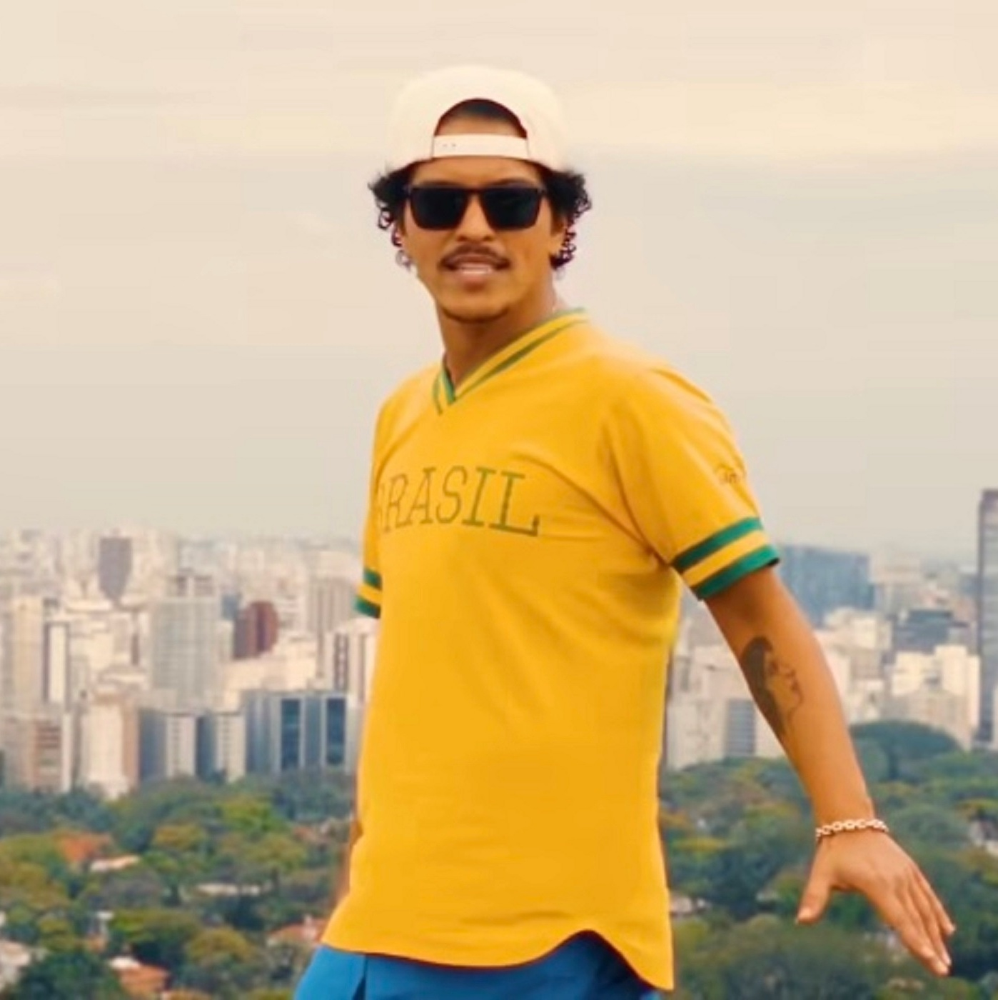

Biografia
Bruno Mars (1985) é um cantor, compositor e produtor musical norte-americano, autor de grandes sucessos, entre eles: “Just The Way You Are", “When I Was You Men” e “Don’t Give Up”. Bruno Mars, nome artístico de Peter Gene Hernandez, nasceu em Honolulu, Havaí, Estados Unidos, no dia 8 de outubro de 1985. É filho do percussionista porto-riquenho, Peter Hernandez e da vocalista filipina e dançarina de hula, Bernadette Hernandez. Desde pequeno, Peter recebeu de seu pai o apelido de "Bruno". Com 3 anos já participava das apresentações da banda da família, “The Love Notes” imitando Elvis Presley. Com 4 anos, toda semana se apresentava em Honolulu, fazendo imitações de Elvis Presley. Com 7 anos, fez um pequeno papel como “Little Elvis” no filme Lua-de Mel, em Las Vegas. Bruno Mars foi aluno do Roosevelt High Scool e com alguns amigos formou a banda “School Boys” e se apresentava ao lado do show de sua família. Bruno aprendeu a tocar vários instrumentos, como guitarra, baixo, piano e percussão.